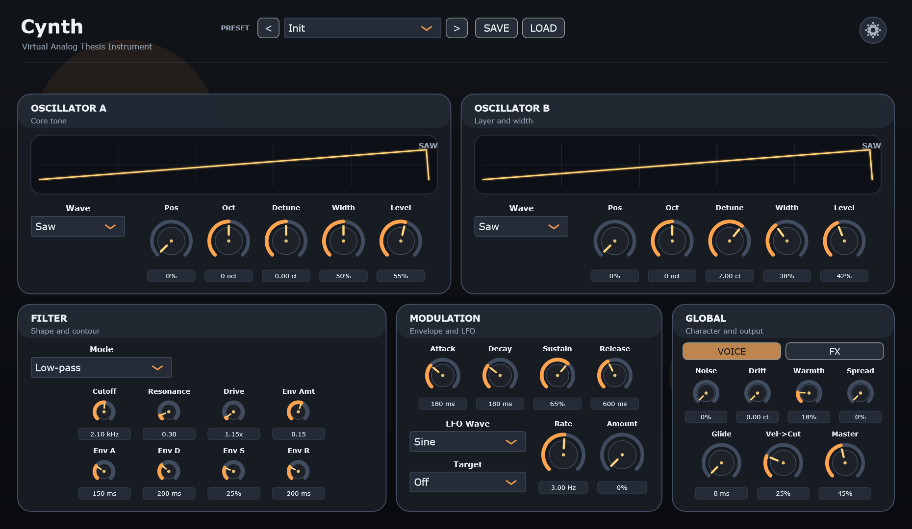

0–4 seconds: bass. 4–10 seconds: chords. 10–18 seconds: arpeggio and effect tail.
48 kHz stereo, 16-bit WAV. Peak normalized to −3 dBFS with short edge fades.
Download the audio demo (3.5 MB)C++ / JUCE / Audio software
A virtual analog synthesizer for Windows, with a polyphonic voice engine, dual oscillators, modulation, and effects.
An independently maintained instrument in development.
Hear the instrument
An original 18-second MIDI sequence rendered through Cynth's actual audio processor, with no external samples or recordings.
0–4 seconds: bass. 4–10 seconds: chords. 10–18 seconds: arpeggio and effect tail.
48 kHz stereo, 16-bit WAV. Peak normalized to −3 dBFS with short edge fades.
Download the audio demo (3.5 MB)The actual editor
Oscillators, filter, envelopes, modulation, and global character in one view.

Engineering
Saw, pulse, triangle, and sine waves; polyphony, envelopes, filter modulation, chorus, and delay.
DSP, processor-state, and spectral tests accompany Windows Standalone and VST3 builds.
DAW compatibility, real-time performance, listening, and usability still require evaluation. This demo is not a production-release announcement.
Project background
Cynth began as MSc thesis work and continues as an independently maintained project. The MSc programme is paused and the degree was not conferred. Source code and the unfinished MSc manuscript remain private.
The earlier Cynth V.1 analog hardware synthesizer was the completed bachelor's project.